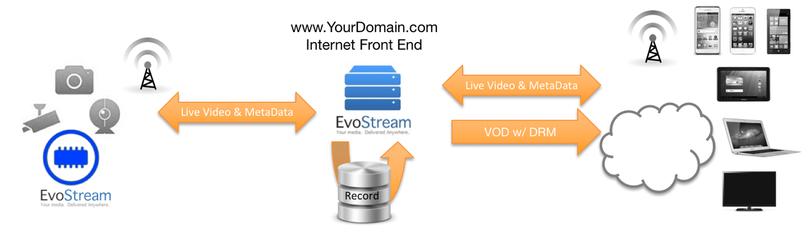

Document Definitions
| TERM | DEFINITION |
|---|---|
| CDN | Content Delivery Network – Servers with high availability and high performance for distributing content to end-users thru the internet. |
| DASH | Dynamic Adaptive Streaming over HTTP – HTTP adaptive bitrate streaming defined by Motion Pictures Experts Group (MPEG). |
| EMS | EvoStream Media Server |
| ERS | EvoStream Rendezvous Server |
| EWS | EvoStream Web Server |
| HDS | HTTP Dynamic Streaming – HTTP adaptive bitrate streaming defined by Adobe. |
| HLS | HTTP Live Stream – HTTP adaptive bitrate streaming defined by Apple |
| HTTP | Hypertext Transfer Protocol. The protocol used for standard web pages. Also used for tunneling by many protocols. TCP based. |
| IDR | Instantaneous Decoding Refresh – This is a specific packet in the H.264 video encoding specification. It is a full snapshot of the video at a specific instance (one full frame). Video players require an IDR frame to start playing any video. “Frames” that occur between IDR Frames are simply offsets/differences from the first IDR. |
| JSON | JavaScript Object Notation |
| Lua | A lightweight multi-paradigm programming language |
| MSS | Microsoft Smooth Streaming – HTTP adaptive bitrate streaming defined by Microsoft. |
| RTCP | Real Time Control Protocol – An protocol that is typically used with RTSP to synchronize two RTP streams, often audio and video streams |
| RTMP | Real Time Messaging Protocol – Used with Adobe Flash players |
| RTMPT | Real Time Messaging Protocol Tunneled – Essentially RTMP over HTTP |
| RTP | Real-Time Transport Protocol – A simple protocol used to stream data, typically audio or video data. |
| RTSP | Real Time Streaming Protocol – Used with Android devices and live streaming clients like VLC or QuickTime. RTSP does not actually transport the audio/video data, it is simply a negotiation protocol. It is normally paired with a protocol like RTP, which will handle the actual data transport. |
| swfURL | Used in the RTMP protocol, this field is used to designate the URL/address of the Adobe Flash Applet being used to generate the stream (if any). |
| tcURL | Used in the RTMP protocol, this field is used to designate the URL/address of the originating stream server. |
| URI | Universal Resource Identifier – The generic form of a “URL”. URI’s are used to specify the location and type of streams, e.g. “rtmp://localhost/live/stream1”. |
| URL | Uniform Resource Locator – This is a specific form of the URI used for web browsing, e.g. “https://www.youtube.com/watch?v=TDuvBurbjVU”. |
| VOD | Video On Demand |
Purpose
This document provides instructions on how to use the EvoStream Media Server (EMS). It will cover the basics of starting the server as well as some advanced topics like modifying configuration files
This document is written for users of the EMS. It is expected that readers have a basic understanding of multimedia streaming and the technologies required to perform multimedia streaming.
EvoStream Media Server
A. What is EMS?
EvoStream is an enterprise-strength media server capable of delivering live and on-demand content to any screen with an unbeatable cost of ownership. With EvoStream, audio/video/data delivery can be expanded to all popular media platforms including Adobe® Flash®, Apple® iOS devices and QuickTime, IPTV, Microsoft® Silverlight®, Android, Blackberry®, and other 3GPP devices into a single workflow.
B. Why Use EMS?
EvoStream’s unique architecture significantly increases I/O performance compared to Java-based media servers, and is the only unified media server capable of running on virtually any platform (Linux, Windows, Mac OSX, etc.) including embedded devices (encoders, IP cameras, DVRs, and more).
C. What are the Key Features and Benefits of the EMS?
EvoStream Media Server is not just a multi-format, multi-protocol server that delivers media rich content across multiple screens and platforms. It delivers enterprise strength content at a cost-lowering performance. Simply put, EvoStream is the most efficient and flexible streaming server available. It delivers enterprise strength content at a cost-lowering performance. For a better understanding, refer to the picture and descriptions below.

- Next Generation Streaming
- Stream directly to HTML5 browsers with sub-second latency! No Plugins, No custom apps!
- Peer to peer streaming eliminating the vast majority of operating costs!
- Metadata delivered in frame-aligned real-time
- Highly Efficient
The EMS has the smallest CPU and memory footprint possible while still being capable of handling approximately 2,000 simultaneous connections per Intel style CPU core. In other words, never max out on hardware resources before reaching bandwidth limitations.
- Extensible
Never write custom modules again or be limited to a single programming language to extend server functionality for applications and infrastructure. The EMS has a diverse set of run-time APIs including standard HTTP calls, PHP, Lua, or C++, allowing for quick and easy integration of EvoStream into existing workflows.
Along with the Runtime API, the EMS also provides an Event Notification System, which allows users to completely tailor the behavior of the EMS. Automate stream routing, dynamically create HLS or HDS, or simply monitor server activities with a simple RESTful monitor!
- Cross Platform
Built from the ground-up to be truly platform agnostic and capable of being delivered on virtually any operating system including embedded systems such as encoders, IP cameras, DVRs, and more!
- Scalable
Whether serving a few users to hundreds of thousands, EvoStream can meet live and on-demand streaming needs through robust load-balancing allowing the infrastructure to infinitely scale as needed while keeping the hardware and licensing costs at an absolute minimum.
- Reliable
Proven and tested under high-traffic environments and deployed worldwide by enterprise content publishers and service providers that demand maximum uptime and reliability.
D. How Does the EMS Work?
EvoStream Media Server runs as a separate application which users can send video and audio streams to. Users can then connect to the EMS with a variety of players or other servers and use the Runtime API to push streams out or pull new streams in.
- Stream Routing
EvoStream’s rich set of APIs includes pull/push streaming, which allows users to easily publish or consume RTMP/RTSP/HLS/MPEG-TS/etc streams to and from other locations such as a CDN or a service provider.
E. Where will EMS Run?
On practically everything! It runs on Windows, Linux, Mac OSX, BSD and Solaris. It can be hosted on a robust server or on a small ARM based IP Camera, or anything in-between.
Specifically, the EMS can be run on:
- Windows®: 10 x64, 8.1 x64, 8 x64, 7 x64, Server 2008 x64, Server 2012
- Linux: Debian, CentOS, RedHat, Ubuntu, openSUSE, and others
- Mac OSX
- FreeBSD
- OpenBSD
- Raspbian